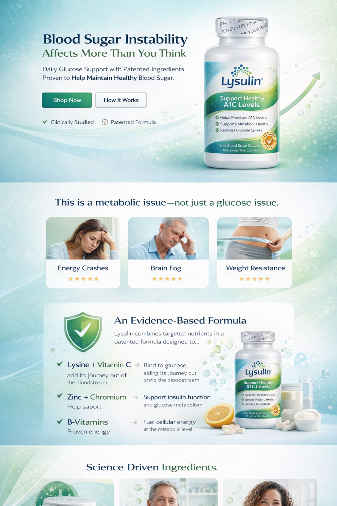

Blood Sugar Instability Affects More Than You Think
Daily glucose support with patented ingredients proven to help maintain healthy blood sugar.
This is a metabolic issue—not just a glucose issue.
- Energy Crashes
- Brain Fog
- Weight Resistance
An Evidence-Based Formula
Lysulin combines targeted nutrients in a patented formula designed to support healthy blood sugar and metabolic health.
- Lysine plus Vitamin C
- Zinc plus Chromium
- B-Vitamins